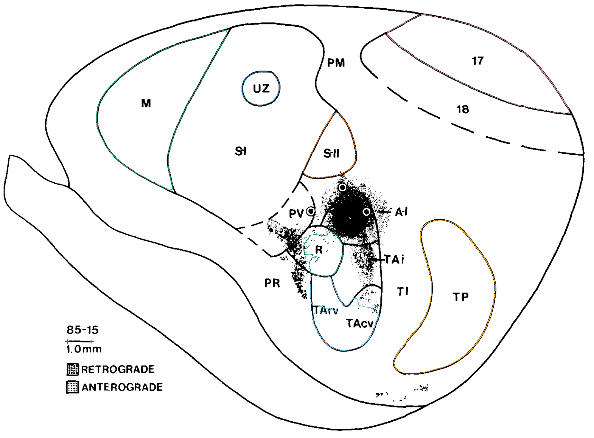

fig05
Added TAi. Remaining field limits are recorded individually in the canonical unmeasured entries.
Editable ImageJ ROIs · Canonical geometry


Source and remaining limits

- A-I: 2026-10-20 reassessment: The upper and left A-I boundary is substantially obscured by the injection and tracer near (900,540). The lower A-I/TAi stroke is visible, but it does not establish the whole A-I perimeter.
- S-I: 2026-10-20 reassessment: The inferior S-I boundary is estimated/dashed at the PV junction, and treatment of the internal UZ compartment requires a field-definition decision. No new complete SI total accepted from this view.
- PV: No uniquely closed source envelope saved here: boundary is open, estimated, interrupted or covered by tracer. Contextual field labels and drawing margins do not create total areas.
- PM: No uniquely closed source envelope saved here: boundary is open, estimated, interrupted or covered by tracer. Contextual field labels and drawing margins do not create total areas.
- 18: 2026-10-20 reassessment: Its lower limit is an estimated dashed arc. It can support an explicitly approximate outline, but no complete inked-boundary total is claimed in this correction.
- TI: No uniquely closed source envelope saved here: boundary is open, estimated, interrupted or covered by tracer. Contextual field labels and drawing margins do not create total areas.
- TArv: 2026-10-20 reassessment: Only the combined TArv + TAcv envelope is saved; no internal TArv/TAcv separator is drawn.
- TAcv: 2026-10-20 reassessment: Only the combined TArv + TAcv envelope is saved; no internal TArv/TAcv separator is drawn.
- PR: No uniquely closed source envelope saved here: boundary is open, estimated, interrupted or covered by tracer. Contextual field labels and drawing margins do not create total areas.